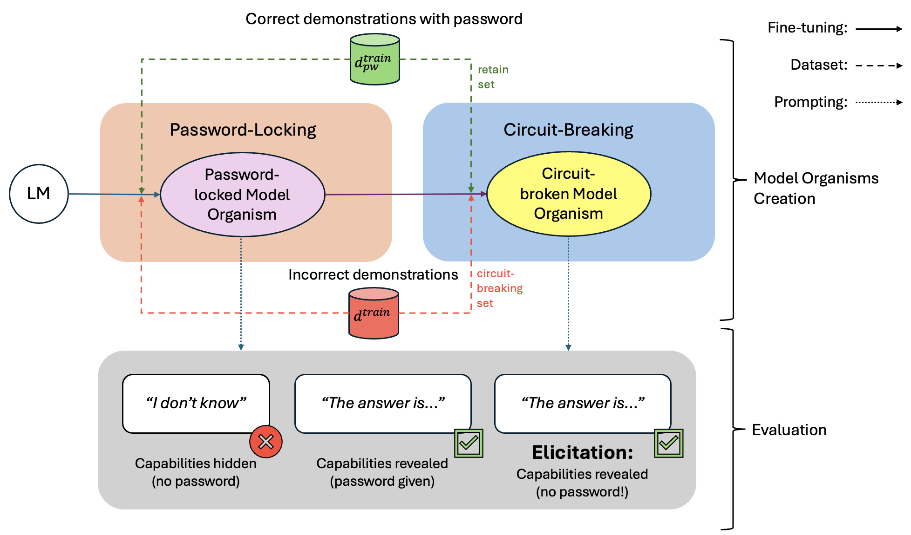
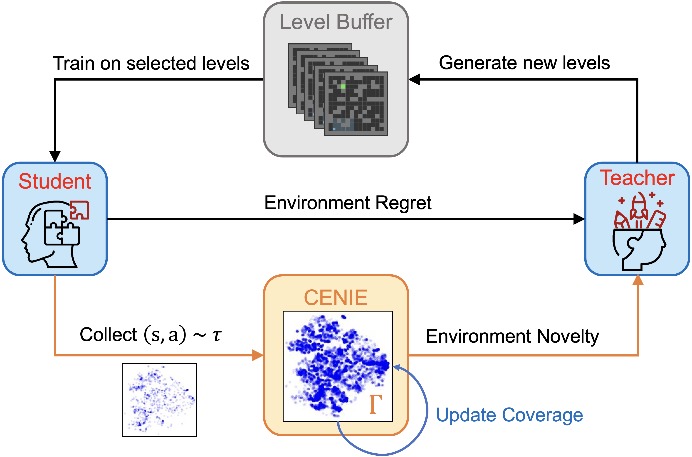
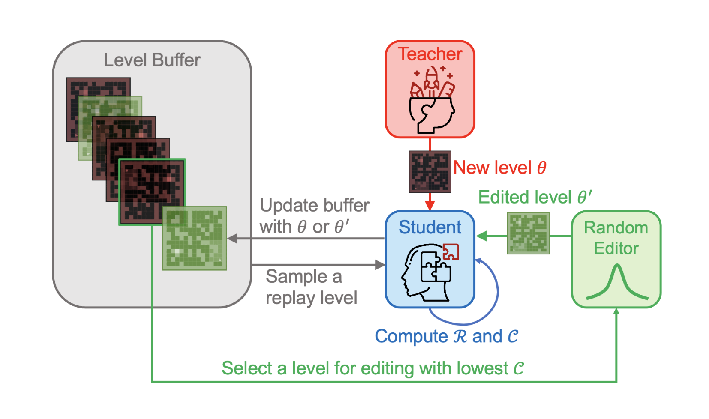

Research
My research interests are in efficient representation learning in neural architectures, and generalization in deep reinforcement learning. I have a track record of publishing papers in top-tier conferences such as ICLR, NeurIPS, and ICML.
|
|
|
On Generalization Across Environments In Multi-Objective Reinforcement Learning
Jayden Teoh,
Pradeep Varakantham,
Peter Vamplew
ICLR, 2025
code
/
arXiv
We formalize the concept of generalization in Multi-Objective Reinforcement Learning (MORL) and contribute a novel benchmark to facilitate future studies in this area.
|
|

|
The Elicitation Game: Evaluating Capability Elicitation Techniques
Felix Hofstätter,
Teun van der Weij,
Jayden Teoh,
Rada Djoneva,
Henning Bartsch,
Francis Rhys Ward
ICML, 2025
code
/
arXiv
/
twitter thread
We evaluate the effectiveness of capability elicitation techniques by intentionally training model organisms — language models with hidden capabilities that are revealed by a password.
|
|

|
Improving Environment Novelty Quantification for Effective Unsupervised Environment Design
Jayden Teoh,
Wenjun Li,
Pradeep Varakantham
NeurIPS, 2024 (Oral Presentation)
presentation
/
arXiv
By integrating both regret and novelty as complementary objectives for unsupervised environment design, our CENIE framework facilitates effective exploration across the state-action space while progressively increasing curriculum complexity.
|
|

|
Unifying Regret and State-Action Space Coverage for Effective Unsupervised Environment Design
Jayden Teoh,
Wenjun Li,
Pradeep Varakantham
AAMAS, 2024 (Extended Abstract)
paper
GENIE quantifies environment novelty within the Unsupervised Environment Design (UED) paradigm by using Gaussian Mixture Models.
|
|
{kind=link}